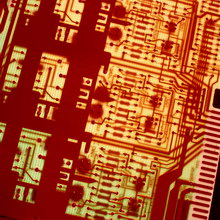

1.1.2. Что такое "Электроника"
Электро́ника (от греч. Ηλεκτρόνιο – электрон) — раздел науки и техники, занимающийся:
- исследованием физических явлений и разработкой приборов, действие которых основано на протекании электрического тока в твердом теле, вакууме или газе;
- изучением электрических свойств, характеристик и параметров названных приборов; - практическим применением этих приборов в различных устройствах и системах.
Первое из указанных направлений составляет область физической электроники. Второе и третье направления составляют область технической электроники.
Электроника представляет собой бурноразвивающуюся отрасль науки и техники. Она изучает физические основы и практическое применение различных электронных приборов. К физической электронике относят: электронные и ионные процессы в газах и проводниках. На поверхности раздела между вакуумом и газом, твердыми и жидкими телами. К технической электронике относят изучение устройства электронных приборов и их применение. Область посвященная применению электронных приборов в промышленности называется Промышленной Электроникой.
Успехи электроники в значительной степени стимулированы развитием радиотехники. Электроника и радиотехника настолько тесно связаны, что в 50-е годы их объединяют и эту область техники называют Радиоэлектроника. Радиоэлектроника сегодня это комплекс областей науки и техники, связанных с проблемой передачи, приема и преобразования информации при помощи элетромагнитных колебаний и волн в радио и оптическом диапазоне частот. Электронные приборы служат основными элементами радиотехнических устройств и определяют важнейшие показатели радиоаппаратуры. С другой стороны многие проблемы в радиотехнике привели к изобретению новых и совершенствованию действующих электронных приборов. Эти приборы применяются в радиосвязи, телевидении, при записи и воспроизведении звука, в радиолакации, в радионавигации, в радиотелеуправлении, радиоизмерении и других областях радиотехники.
Современный этап развития техники характеризуется все возрастающим проникновении электроники во все сферы жизни и деятельности людей. По данным американской статистики до 80% от объема всей промышленности занимает электроника. Достижения в области электроники способствуют успешному решению сложнейших научно–технических проблем. Повышению эффективности научных исследований, созданию новых видов машин и оборудования. Разработке эффективных технологий и систем управления: получению материала с уникальными свойствами, совершенствованию процессов сбора и обработки информации. Охватывая широкий круг научно-технических и производственных проблем, электроника опирается на достижения в различных областях знаний. При этом с одной стороны электроника ставит задачи перед другими науками и производством, стимулируя их дальнейшее развитие, и с другой стороны вооружает их качественно новыми техническими средствами и методами исследования. Предметами научных исследований в электронике являются:
1. Изучение законов взаимодействия электронов и других заряженных частиц с электромагнитными полями.
2. Разработка методов создания электронных приборов в которых это взаимодействие используется для преобразования энергии с целью передачи, обработки и хранения информации, автоматизации производственных процессов, создания энергетических устройств, создания контрольно–измерительной аппаратуры, средств научного эксперимента и других целей.
История электроники
Электроника зародилась в начале ХХ века после создания основ электродинамики (1856-73 г.г.), исследования свойств термоэлектронной эмиссии (1882-1901 г.г.), фотоэлектронной эмиссии (1887-1905 г.г.), рентгеновских лучей (1895-97 г.г.), открытия электрона (Дж. Дж. Томсон, 1897 г.), создания электронной теории (1892-1909 г.г.).
Развитие электроники началось с изобретения лампового диода (Дж. А. Флеминг, 1904 г.); трехэлектродной лампы – триода (Л. Де Форест, 1906 г.); использования триода для генерирования электрических колебаний (немецкий инженер А. Мейснер, 1913 г.); разработки мощных генераторных ламп с водяным охлаждением (М.А. Бонч-Бруевич, 1919-25 г.г.) для радиопередатчиков, используемых в системах дальней радиосвязи и радиовещания. В течение короткого времени были созданы основные электронные приборы. Вакуумные фотоэлементы (экспериментальный образец создал А.Г. Столетов, 1888 г., пром. образец – нем. ученые Ю. Эльстер и Г. Хейтель, 1910 г.), фотоэлектронные умножители – однокаскадные (П.В. Тимофеев, 1928 г.) и многокаскадные (Л.А. Кубецкий, 1930 г.) – позволили создать звуковое кино, послужили основой для разработки передающих телевизионных трубок – видикона (идея предложена в 1925 г. А.А. Чернышевым), иконоскопа (С.И. Катаев, независимо от него В.К. Зворыкин, 1931-32 г.), супериконоскопа (П.В. Тимофеев, П.В. Шмаков, 1933 г.), суперортикона (двухсторонняя мишень для такой трубки была предложена сов. ученым Г.В. Брауде в 1939 г., впервые суперортикон описан американскими учеными А. Розе, П. Веймером и Х. Лоу в 1946 г.) и др. Создание многорезонаторного магнетрона (Н.Ф. Алексеев и Д.Е. Маляров под рук. М.А. Бонч-Бруевича, 1936-37 г.г.), отражательного клистрона (Н.Д. Девятков и др. и независимо от них В.Ф. Коваленко, 1940 г.) послужило основой для развития радиолокации в сантиметровом диапазоне волн. Пролетные клистроны (идея предложена в 1932 г. Д.А. Рожанским, развита в 1935 г. А.Н. Арсеньевой и нем. физиком О. Хайлем, реализована в 1938 г. амер. физиками Р. и З. Варианами и др.) и лампы бегущей волны (амер. ученый Р. Компфнер, 1943 г.) обеспечили дальнейшее развитие систем радиорелейной связи, ускорителей элементарных частиц и способствовали созданию систем космической связи.
Одновременно с разработкой вакуумных электронных приборов создавались и совершенствовались газоразрядные приборы (ионные приборы), например, ртутные вентили, используемые главным образом для преобразования переменного тока в постоянный в мощных промышленных установках, тиратроны для формирования мощных импульсов электрического тока в устройствах импульсной техники, газоразрядные источники света. Использование кристаллических полупроводников в качестве детекторов для радиоприемных устройств (1900-1905 г.г.), создание купроксных и селеновых выпрямителей тока и фотоэлементов (1920-1926 г.г.), изобретение кристадина (О.В. Лосев, 1922 г.), изобретение транзистора (У. Шокли, У. Браттейн, Дж. Бардин, 1948 г.) определили становление и развитие полупроводниковой электротехники.
Разработка планарной технологии полупроводниковых структур (конец 50-х, начало 60-х г.г.) и методов интеграции многих элементарных приборов (транзисторов, диодов, конденсаторов, резисторов) на одной монокристаллической полупроводниковой пластине привело к созданию нового направления – микроэлектроники. Основные разработки в области интегральной электроники направлены на создание интегральных схем – микроминиатюрных электронных устройств (усилителей, преобразователей, процессоров ЭВМ, электронных запоминающих устройств и т. п.), состоящих из сотен и тысяч электронных элементов, размещаемых на одном полупроводниковом кристалле площадью в несколько мм2. Микроэлектроника открыла новые возможности для решения таких проблем, как автоматизация управления технологическими процессами, переработка информации, совершенствование вычислительной техники и других, выдвигаемых развитием современного производства. Создание квантовых генераторов (Н.Г. Басов, А.М. Прохоров и независимо от них Ч. Таунс, 1955 г.) – приборов квантовой электроники – определило качественно новые возможности электроники, связанные с использованием источников мощного когерентного излучения оптического диапазона (лазеров) и построением сверхточных квантовых стандартов частоты. Фундаментальные исследования в области физики и технологии электронных приборов выполнили М.А. Бонч-Бруевич, Л.И. Мандельштамм, Н.Д. Папалекси, С.А. Векшинский, А.А. Чернышев, М.М. Богословский и многие другие. По проблемам возбуждения и преобразования электрических колебаний, излучения, распространения и приема радиоволн, их взаимодействия с носителями тока в вакууме, газах и твердых телах работали Б.А. Введенский, В.Д. Калмыков, А.Л. Минц, А.А. Расплетин, М.В. Шулейкин и др. В области физики полупроводников – А.Ф.Иоффе, люминесценции и по др. pазделам физической оптики – С.И. Вавилов, квантовой теории рассеяния света излучения, фотоэффекта в металлах – И.Е. Тамм и многие другие.
Электроника появилась в результате поиска способов использования электрических явлений для передачи информации. Возможности по реализации теоретических изысканий в этом направлении открылись после изобретения итальянским физиком А. Вольтой электрохимического источника тока (1799 г.). Уже в 1809 г. немецкий врач С. Т. Земмеринг построил первое в мире электронное устройство – телеграф. В основу изобретения было положено применение источника тока. В 1832 г. русский электротехник и ученый П. Л. Шиллинг продемонстрировал действие первого электромагнитного телеграфа. Опираясь на исследования Фарадея, Дж. Максвелла и опыты Г. Герца, А. С. Попов создал устройство для регистрации электромагнитных волн. Демонстрация первого в мире радиоприемного устройства состоялась 7 мая 1895 г. Радиоимпульсный режим работы стал широко использоваться для передачи информации. Это привело к необходимости создания чувствительных индикаторов электрических колебаний и устройств для их усиления – электронных приборов. В 1904 г. Д. Э. Флеминг, используя разработки А. Н. Лодыгина и Т. А. Эдисона, изготовил первую электронную лампу – диод, который начали использовать в приемниках для выделения передаваемых сигналов. С этого времени началась история современной электроники – науки, изучающей принципы построения, работы и применения различных электронных приборов. Именно применение электронных приборов позволяет построить устройства, обладающие полезными для практических целей функциями – усиление электрических сигналов, передачу и прием информации, измерение параметров и т.д. Сегодня электроника помогает быстрее считать, лучше планировать, точнее управлять технологическими процессами.
Очень быстро (примерно за 30 лет) было разработано много типов электровакуумных приборов. Обладая достаточно высокими качественными показателями, они имели существенные недостатки: большие габариты, большую потребляемую мощность и малый срок работы. Эти недостатки серьезно мешали изготовлению сложных многофункциональных устройств. В тридцатых годах прошлого столетия началась интенсивная исследовательская работа по созданию полупроводниковых электронных приборов. Существенные результаты в этом направлении были получены в послевоенные годы. Так, в 1947 г. американские исследователи Дж. Бардин и У. Браттейн создали и испытали первый германиевый точечный транзистор. В 1949 г. советские ученые А. В. Красилов и С. Г. Мадоян изготовили первые отечественные образцы точечных транзисторов. В 1952 г. У. Шокли выдвинул идею создания полевого транзистора, которую реализовал в 1958 г. польский ученый С. Тешнер. В 1960 г. Д. Кинг и М. Аттала создали МОП-транзистор. Полупроводниковые приборы имеют малую потребляемую мощность, высокую надежность, малую массу и размеры, поэтому уже к началу 70-х годов они практически полностью вытеснили электровакуумные электронные приборы, позволили создать новое направление электроники – микроэлектронику.
Полупроводниковая электроника интенсивно развивается и в нашей стране. Большой вклад в развитие полупроводниковых электронных приборов внесли советские ученые Лосев, Френкель, Курчатов, Давыдов, Туркевич и многие другие. Выдающихся успехов в этом направлении добился академик Ж. И. Алферов. За исследование гетеропереходов и за организацию производства полупроводниковых приборов на их основе в 2000 г. Ж. И. Алферову присуждена Нобелевская премия.
* Изучение электроники базируется на электротехнике, которая в свою очередь основана на электродинамике (школьный курс физики 11-й класс).